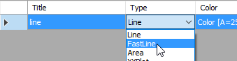
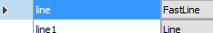

By default when trending series that have a large number of points in the Line chart, you may find that the data takes a long time to be charted as a lot of pressure is put on the CPU to draw it. Therefore you can employ the following strategies to minimise, if not prevent, any lag in the trending of a series and thereby reduce the required CPU load:
Change a Line series to a FastLine series: a FastLine series is an optimised (extremely simplified) Line series, which is to draws its points as fast as possible, you can do this as follows:
Click the Type dropdown list box of the Line series you wish to change and select the FastLine series type from the list of available series types.

Reduce the number of data points that the FastLine series needs to plot: instead of drawing all the points within a series, you can use reduce the number of points when large numbers of points occur at the same location or date time.
In this case ONLY the FastLine series provides methods to reduce the number of plotted points. We recommend that you use the First method, which only plots the first point at each location or date time, which you can configure as follows:
Select the required FastLine series that you want to configure, this is indicated in the series list by displaying a filled right arrow in the first column.

In the default Line Style tab, uncheck Draw All checkbox in the Draw All Points section and ensure that the list box specifies First, the default option.
Note: The other option provided by this list box is the MinMax option, which plots both the minimum and the maximum point at each date time (X value).
Tip: ONLY the FastLine series allows for this configuration, you will NOT find this option when a Line series is selected.
Direct2D mode and Anti-aliasing (as a last resort): configure chart-specific settings that speed up the drawing process.
Note: These settings are only available from MAPS 3.4.1 or Adroit 8.4.1 onwards.
By default the Line chart control renders the charts using the GDI+ API. To speed up the drawing process there is an option to draw the charts using the much faster Direct2D API, by setting the Boolean Direct2DMode property of the Line Chart to True.
You can also turn off anti-aliasing to speed up the drawing of the chart but the chart will not appear as smooth, by setting the Boolean AntiAliased property of the Line Chart to False.